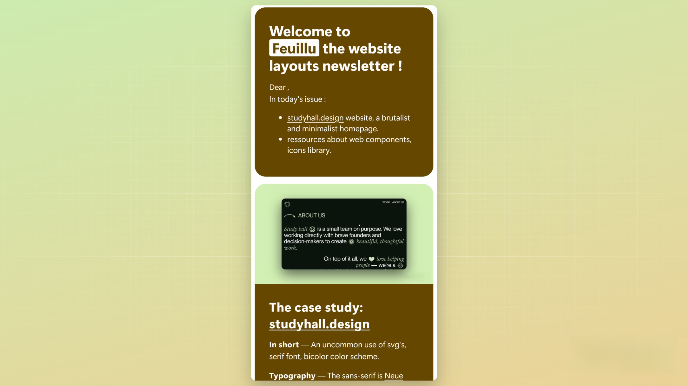

Développement d'un site de newsletter & intégration d'email HTML responsive.
Rôle
Développeur et designer du projet
Commande / Objectifs
Création d'un site d'inscription et d'envoi d'une newsletter consacrée au web-design. Intégration d'email HTML responsive. Chaque mois, la newsletter est envoyée via une tâche automatisée. Les mails envoyés peuvent-être lus dans le client mail ou dans le navigateur. Il est possible de se désinscrire de la newsletter à tout moment.
Technologies utilisées
- Backend : BDD SQLite et requêtes SQL, Express, NodeJS
- Frontend : HTML, CSS, Javascript
Fonctionnalités
- Logique de souscription : les utilisateurs s'inscrivent sur la page d'accueil en remplissant le formulaire. Les données sont enregistrées dans une base de données SQL. Une notification visuelle confirme la souscription à l'utilisateur, si l'email est déjà présent dans la BDD une notification visuelle informe de l'erreur. Un email de bienvenue est envoyé au nouvel inscrit.
- Logique de désinscription : les utilisateurs peuvent se désinscrire sur la page /unsubscribe. L'utilisateur entre son mail dans le formulaire de désinscription, la BDD se met à jour en conséquence. Une vérification s'opère avec une requête SQL pour vérifier si le mail est dans la BDD, si ce n'est pas le cas une notification visuelle informe l'utilisateur.
- UI : intégration HTML de l'email. Adaptation responsive mobile.

- Composition dynamique de la newsletter : une requête SQL est effectuée dans la BDD pour personnaliser le prénom et le nom du destinataire.
- Envoi régulier de la newsletter : un Node Cronjob automatise l'envoi par mail chaque mois.
- Permettre au client d'afficher la newsletter dans son navigateur : une route Express prend en paramètre la requête pour savoir quel mail elle doit afficher.
- Déploiement : afin de déployer la BDD SQLite j'ai choisi fly.io, la BDD locale SQLite est répliquée sur le serveur.
Ce que j'ai appris
- comment utiliser NodeJS : asynchrone, gestion des erreurs
- Express : gestion des requêtes HTTP, concept de routes, controllers, configuration de serveur
- Requêtes et réponses HTTP, status code
- HTML emails (les différentes règles de compatibilité CSS des clients mails)
- Organiser une architecture backend avec le frontend directement intégré
- Hébergement: comment héberger et faire persister BDD SQLite grâce à Fly.io, déployer un front-in-back sur un serveur en ligne
Lien du projet et code source